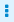

Connecting to Google Calendar
To trigger integration execution when a poll returns an update to a Google calendar, add a Google Calendar connection to a simple integration as its start connection. To add an event to a calendar or update an event in a calendar, you can do either of the following:
-
Add a Google Calendar connection to the middle of a flow.
-
Add a Google Calendar connection to finish a simple integration.
Details for connecting to Google Calendar are in the following topics:
Creating a Google Calendar connection
When you create a Google Calendar connection, you authorize the connection to access the Google Calendars that are associated with one particular Google account. After you create a Google Calendar connection, you can add it to multiple integrations.
-
You registered {prodname} as a Google client application and enabled the Google Calendar API.
-
The {prodname} Settings page entry for Google Calendar has values for the client ID and client secret, which you obtained by registering {prodname} as a Google client application.
-
In {prodname}, in the left panel, click Connections to display any available connections.
-
Click Create Connection to display the available connectors. A connector is a template that you use to create one or more connections.
-
Click the Google Calendar connector.
-
In the Configure Connection page, click Connect Google Calendar, which takes you to a Google sign-in page.
If Connect Google Calendar does not display, then your {prodname} environment is not registered as a Google client application with the Google Calendar API enabled. See Registering {prodname} as a Google client application. When your environment is not registered with Google, then when you try to create a Google Calendar connection, {prodname} displays multiple fields that prompt for authorization information. While you can create a Google Calendar connection by entering values in these fields, it is not recommended.
-
In the Google sign-in page, select the Google account that you want this connection to access from {prodname} and click Next.
-
In response to the openshiftapps.com wants to access your Google Account prompt, click Allow to return to {prodname}.
-
In the {prodname} Name field, enter your choice of a name that helps you distinguish this connection from other connections. For example, enter
Google Calendar Work Connection. -
In the Description field, optionally enter any information that is helpful to know about this connection. For example, enter
Sample Google Calendar connection that uses my Google work account. -
Click Save to see that the connection you created is now available. If you entered the example name, you would see that Google Calendar Work Connection appears as a connection that you can choose to add to an integration.
Triggering an integration when polling returns an event from a Google Calendar
To trigger execution of an integration upon obtaining events from a Google Calendar that you specify, add a Google Calendar connection to a simple integration as its start connection. When the integration is running, the Google Calendar connection checks the Google Calendar for events at intervals that you control. When the connection finds events that comply with the way that you configured the Google Calendar Get Events action, the connection passes the events to the next step in the integration.
When a Google Calendar connection returns more than one event, {prodname} executes the integration for each returned event. For example, if the poll returns 5 events then {prodname} executes the integration five times.
-
You created a Google Calendar connection.
-
In the {prodname} panel on the left, click Integrations.
-
Click Create Integration.
-
On the Choose a connection page, click the Google Calendar connection that you want to use to start the integration.
-
On the Choose an action page, select the Get Events action.
-
To configure the Get Events action:
-
In the Delay field, accept the default of 30 seconds or specify how often you want the integration to check the calendar.
-
In the Calendar name field, enter the name of a calendar that is accessible from the Google account that this Google Calendar connection is authorized to access.
-
In the Max Results field, accept the default of 5 or indicate the maximum number of events that the connection can return for each poll.
-
Select one of the following to indicate the date that you want the connection to use to start checking for events. The connection checks that date and subsequent dates.
-
Consume from the current date ahead starts on the current date.
For example, if you select this option, and if Max Results is 5, then the Google Calendar connection starts checking for events on the current date and returns no more than the first five events that it finds. It does not matter whether or not these events have been updated or added since the last poll.
-
Consume from the last event update date on the next poll starts on the date of the most recently updated event that was returned in a previous poll.
For example, if you select this option, and if Max Results is 5, then the Google Calendar connection returns no more that 5 updated or new events. The connection starts checking for new or updated events on the date of the most recently updated event that was returned in a previous poll.
-
-
Optionally, in the Query for events field, specify text to filter the events that the poll can return. The connection returns only events that contain the specified text in at least one event field.
For example, suppose that you specify
Standup meetingin the query field. A poll would return only those events that haveStandup meetingin an event field.
-
-
Click Next to add this Google Calendar connection as the integration’s start connection.
The connection appears as the first step in the simple integration.
Obtaining a particular event from a Google Calendar
In an integration, you can obtain a particular Google Calendar event in the middle of a flow. Obtaining a particular event is useful, for example, when you want to:
-
Update the event in a subsequent Google Calendar connection.
-
Announce the event by using a subsequent Twitter connection.
To obtain one event, add a Google Calendar connection to the middle of a flow.
|
In this release, while obtaining a specific event in a simple integration’s finish connection is supported, it is not particularly useful. This is expected to change in a future release. |
-
You created a Google Calendar connection that is authorized to access the Google Calendar that has the event that that you want to get.
-
You are creating or editing a flow and {prodname} is prompting you to add to the integration.
-
On the Add to Integration page, click the plus sign where you want to add the connection.
-
Click a Google Calendar connection that is authorized to access the calendar that you want to connect to.
-
On the Choose an action page, select Get a Specific Event.
-
Specify the name of the calendar that has the event that you want.
-
Specify the ID of the event to get. To obtain the event ID, do one of the following:
-
Map it from a previous Google Calendar connection.
-
Manually obtain it from the calendar as follows:
-
In a browser, display the calendar that contains the event you want to get.
-
Append
?gsessionid=OK&eventdeb=1to the URL and redisplay the calendar. -
In the calendar, click the event that you want to get.
-
In the event popup, click  and select Troubleshooting info.
-
In the popup that Google Calendar displays, copy the string that follows
eid=. For example, an event ID looks something like this:p1pva2a4t504gbsha12di9ch6k_20181107T150000Z*.
-
-
-
Click Next to add the connection to the flow.
The connection appears in the flow where you added it.
If you want to map any values from a previous step to the fields in this connection, add a data mapper step. First, add all needed connections to the flow. Then add a data mapper step immediately before this connection.
Adding an event to a Google Calendar
In an integration, you can add an event to a Google Calendar in the middle of a flow or to finish a simple integration. To do this, add a Google Calendar connection to the middle of a flow or as a simple integration’s finish connection.
-
You created a Google Calendar connection that is authorized to access the Google Calendar to which you want to add an event.
-
You are creating or editing a flow and {prodname} is prompting you to add to the integration. Or, {prodname} is prompting you to choose a finish connection.
-
On the Add to Integration page, click the plus sign where you want to add the connection. Skip this step if {prodname} is prompting you to choose the finish connection.
-
Click a Google Calendar connection that is authorized to access the calendar that you want to add an event to.
-
On the Choose an action page, select the Create Event action.
-
Configure the Create Event action:
-
Enter a title for the new event.
-
Enter the name of the Google Calendar to add the event to.
-
For the other input parameters, you can enter data or you might want to map values from an event that you obtained in a previous Google Calendar connection.
-
-
Click Next to add the connection to the flow.
The connection appears in the integration flow where you added it.
If you want to map any values to the fields in this Google Calendar connection, add a data mapper step to the flow. First, add all needed connections to the flow. Then add a data mapper step immediately before this Google Calendar connection.
Updating an event in a Google Calendar
In an integration, you can update an event in a Google Calendar in the middle of a flow or to finish a simple integration. To do this, add a Google Calendar connection to the middle of a flow or as a simple integration’s finish connection.
|
In this release, the Update Event action requires a value in each event field. In most if not all cases, this means that you must add a Google Calendar connection that obtains the event that you want to update, then add the Google Calendar connection that updates the event, and then insert a data mapper step between the two Google Calendar connections. |
-
You created a Google Calendar connection that is authorized to access the Google Calendar that has the event that you want to update.
-
In the flow, there is an earlier connection to Google Calendar and that connection obtains the event that you want to update.
-
You are creating or editing a flow and {prodname} is prompting you to add to the integration. Or, {prodname} is prompting you to choose a finish connection.
-
On the Add to Integration page, click the plus sign where you want to add the connection. Skip this step if {prodname} is prompting you to choose the finish connection.
-
Click a Google Calendar connection that is authorized to access the calendar that has the event that you want to update.
-
On the Choose an action page, select Update Event.
-
To configure the Update Event action:
-
Enter the title of the event that you want to update.
-
Enter content in each event field that you want to update. Do not enter content in an event field when you want the content in that field to remain unchanged.
-
-
Click Next to add the connection to the flow. The connection appears in the integration visualization where you added it.
-
In the integration visualization, click the plus sign that is just before the connection that you just added.
-
Click Data Mapper.
-
In the data mapper, for each event field that remains the same in the updated event, map that field from the Google Calendar connection that obtained the event to the corresponding field in the Google Calendar connection that updates the event.
Do not map fields that you are updating. If you map a field and also specify an update for that field when you configure the Update Event action, {prodname} uses the mapped value.
-
In the upper right, click Done to add the data mapper step.